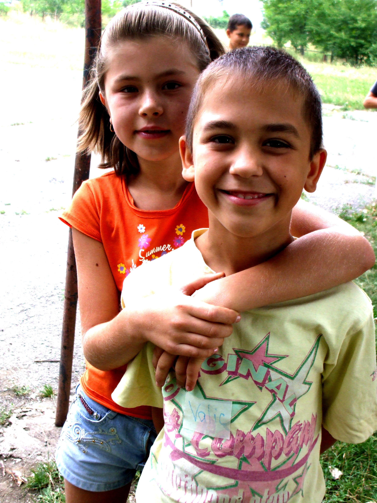
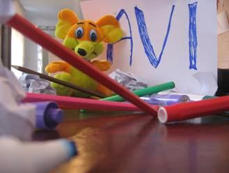
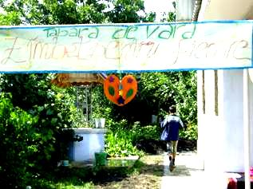
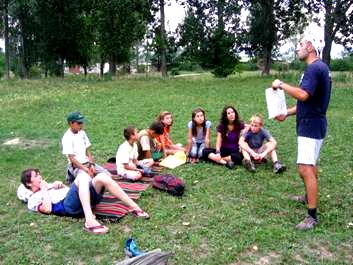
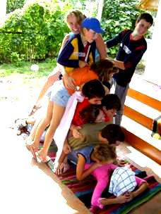
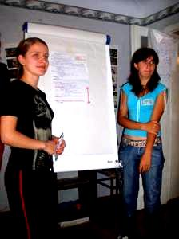
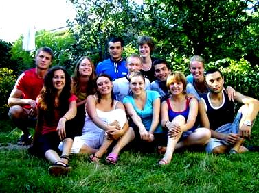

Projecten
Overig
A smile for everybody - Moldavie, Edinet 2007
International Workcamp organized by AVI-Moldova in partnership with "People for People" daily center for children

Description of the project partner
Edinet is a smaller town in the north of Moldova. In 2004, there was founded by the organization "Oameni pentru Oamenii" ("People for People") and under financal support of a swiss governmental organization a "Centru pentru copii" ("center for children"). 
20 disabled children were chosen from the local community to be the beneficiaries of this center. Here they could come every day and spend their free time, especially those who could not go to school because of their disabilities, made excursions and other activities. Every year at the workcamp will be teenagers that are between 15-18 years old. They are not only disabled but also from disadvantaged families.
Since the financial support was limited for 12 month, the centre had to stop its regular work and was just able to make voluntary based activities on weekends. In February 2006, due to donations from Germany, the centre could resume its work on a very basic level.
As the children in Moldova have 3 month holidays, but their parents have to work, we want to make a special time for them.
Our aim is to organize an international work camp in this place, by the meaning of making activities, cultural exchange and excursions with children coming to the centre.
The work in the center
First of all, the center is organizing activities with the children. The volunteers make different working ateliers for them, for example arts such as painting, handcrafts, working with wood, paper, scissors etc. creative workshops, like theater and a little choir. As many activities as possible will be made outside, such as painting on streets, sport activities, learning about plants etc.
Also there are a lot of relaxing games, especially in consideration of the children who might have difficulties with concentration and handworks.
Besides these daily activities, there are special events like competitions and concerts. On the weekends, there are excursions to famous and beautiful places of Moldova.
The children shall have the possibility to choose between different projects and learn something new everyday. All activities shall be enjoyed like games and not enforced as work.
Also, there are bed-bound children visits, who can't come to the center, at their homes.
In addition and if possible under inclusion of this "pedagocial work", there are practial tasks: cooking, constructing little tables to eat outside in the garden and maybe even helping with the construction of an additional room to the center.
To make the local society profiting and included in our activities, we would like to have also a practical activity, if possible together with the local children, by cleaning the nearby park.
Activities of the camp in Edinet (Moldova) August 2007
The activities of the volunteers from the Edinet summer camp 2007 can be divided into four parts:

- Making a program for the people-for-people-centre.
- Workshops
- Language courses
- Games and other energizing activities
- Evaluating the activities (what was good and what was not good?)
- Cooking and cleaning the centre.
- Become a close group of international young people who want to share their ideas and responsibilities to be an example for others.
In the summer of 2007 the volunteers were with a group of 10 people (aged 18-31) from different European countries. Every evening they sat together to plan the activities for the next day. Most of the time the activities were organized in couples with a Moldovan and a foreign volunteer. The morning program for the centre started with breakfast and group activities for all children together. After that the children under the age of 14 went out to talk about subjects, like healthy way of living, drugs and family problems. After that they played games, sports activities and sang songs. The older ones (14-21 years old) participated in workshops, where they had to think and debate about solutions for teenager problems; breaking stereotypes; cleaning and repairing the local park; living in ecological villages; organizing projects and fund raising activities, etc.
At the same time the cooking couple prepared a lunch for everybody. And while washing these dishes they already planned what to cook for dinner for the volunteers that day.
The afternoon activities in the centre were meant to teach the children about topics in which they are interested. The most important class for the afternoon was the English lesson (one of the volunteers was an English teacher). Besides this the volunteers organized classes to tell the children about the countries Spain, the Netherlands, Czech and France. More relaxing were the dancing, music and creative lessons, a visit to the park or the sports field.
At 16h30 the day for the children finished. The volunteers started to clean and back home in the host family they evaluated the whole day. Everyone of them had a turn to tell the others what they liked that day, what they would like to change and in which way. After this the program for the next day had to be made. Once a week the children of the centre were asked for their opinion and new ideas about the topics for the workshops and lessons.
The feeling of sharing the full responsibility for running the centre made the group of volunteers a close team from the first day on. They really depended on each other for the work and for their own leisure time as well. Because of staying in the same host family they became like brothers and sisters. This attitude was also visible for the children in the centre, who told afterwards that they had the warm feeling that the volunteers were like big new friends/ brothers/ sisters to them!
